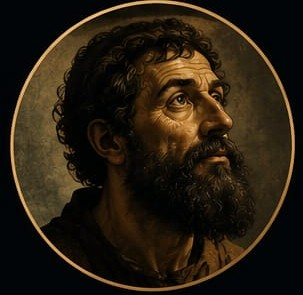
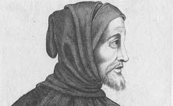
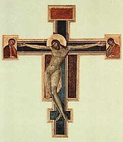
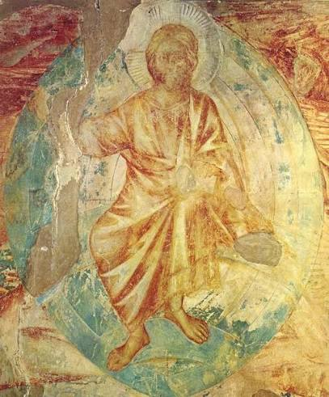
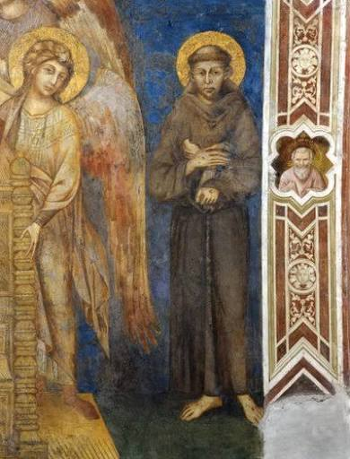
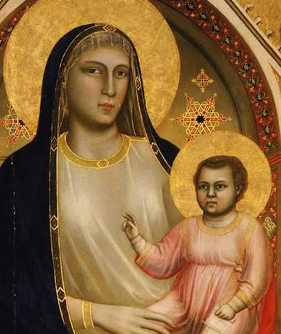
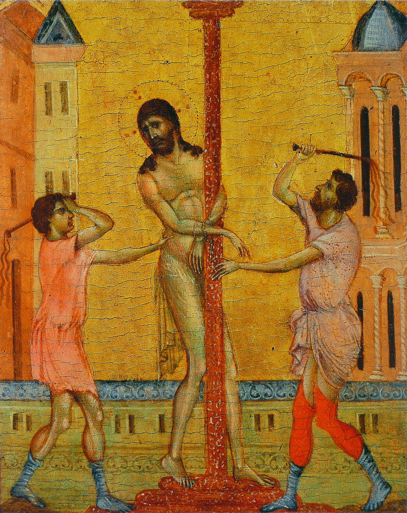

01

@cimabue.art
Giovanni Cimabue
Florencia, Italia · Duecento

ARTISTA · DUECENTO
NACIMIENTO
1240
PROFESIÓN
Pintor
Perfil
Artista italiano del Duecento que comenzó a apartarse de la rigidez del arte bizantino. Intentó dar más movimiento y volumen a sus figuras.
DATO DESTACADO
Buscó representar las figuras de una manera más dinámica.
Obras destacadas




